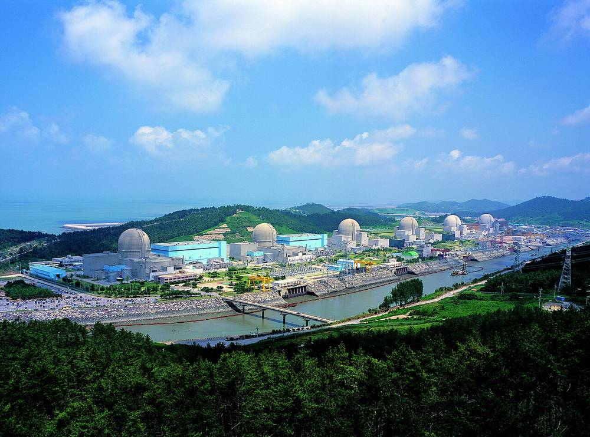

원전 발전량, RPS 의무공급량 계산서 빼자는 법안
김위상 의원 등 12명이 낸 재생에너지법 개정안으로, 공포 6개월 뒤 시행된다. 의견은 11월 22일까지 국회입법예고 누리집에서 낸다.




하수처리장 방류수 질소를 하루 전에 예측해 전력비 10% 절감 기대…부산 강변하수처리장 등 수질원격감시 우수사례 4곳
기후부·한국환경공단 선정, 4곳 중 3곳이 인공지능 예측 모형 / 광주 평동3차 공공폐수처리시설은 약품 61% 덜 써 누적 1억2,000만 원 절감 기대

재생에너지 기자재 관세 경감, 2029년까지 연장 법안
배준영 의원 등 13명이 낸 조세특례제한법 개정안으로, 전기·수소 시내버스 부가세 면제도 2030년까지 늘린다. 입법예고는 11월 19일까지다.
오늘 주목할 소식
- 노후 발전설비 안전성평가 법안, 위험등급이면 철거
- 재활용 골재로 농지·산지 성토 금지, 폐기물관리법 개정안
- 태양광·풍력 국내생산세액공제 한도 2배 법안
- 공공기관 냉방 실내온도 기준 26℃ 이상, 난방 20℃ 이하로…기후부 고시 개정안 23일까지 의견 받는다
- 울산시 2027~2031년 기후위기 적응대책안 6개 부문 20개 과제…24일 시민설명회서 의견 받는다
- 지방정부에 조례 본보기 10개…폐교 대부료 낮춘 제주, 활용률 71.4%로 올라
햇빛소득마을 더보기 ›
정치 더보기 ›
원전 발전량, RPS 의무공급량 계산서 빼자는 법안
김위상 의원 등 12명이 낸 재생에너지법 개정안으로, 공포 6개월 뒤 시행된다. 의견은 11월 22일까지 국회입법예고 누리집에서 낸다.
정책 더보기 ›
원전 발전량, RPS 의무공급량 계산서 빼자는 법안
김위상 의원 등 12명이 낸 재생에너지법 개정안으로, 공포 6개월 뒤 시행된다. 의견은 11월 22일까지 국회입법예고 누리집에서 낸다.
산업·경제 더보기 ›
재생에너지 기자재 관세 경감, 2029년까지 연장 법안
배준영 의원 등 13명이 낸 조세특례제한법 개정안으로, 전기·수소 시내버스 부가세 면제도 2030년까지 늘린다. 입법예고는 11월 19일까지다.
금융 더보기 ›
지역 중소·중견기업 보증부 대출 4조5,000억 원, 시·도 공모 성적 따라 나눈다
1차 13개 시·도에 3조7,400억 원…최우수 3곳 3,800억 원씩 / 11월 2일 발표보다 등급별 금액 줄고 7,600억 원은 2차 초광역 공모로
사회 더보기 ›
하수처리장 방류수 질소를 하루 전에 예측해 전력비 10% 절감 기대…부산 강변하수처리장 등 수질원격감시 우수사례 4곳
기후부·한국환경공단 선정, 4곳 중 3곳이 인공지능 예측 모형 / 광주 평동3차 공공폐수처리시설은 약품 61% 덜 써 누적 1억2,000만 원 절감 기대
지역 더보기 ›
울산시 2027~2031년 기후위기 적응대책안 6개 부문 20개 과제…24일 시민설명회서 의견 받는다
회야댐 홍수조절·폭염 취약계층 보호 등 핵심사업, 세부사업 총계는 74개 / 부문별 사업 수를 더하면 73개…시 "협의 중이라 바뀔 수 있다"
오피니언 더보기 ›
이순형 동신대 교수, 전남광주 재생에너지 50GW 일감 지역 기업에 돌리자 제안
투자 250조 원 추산하며 발주 시간표·공동도급·인력 양성 주문…산업부는 호남 주요 전력망 확충을 2031년 이후로 설명
시민에너지 더보기 ›
전력망 막힌 햇빛소득마을 133곳에 저장장치, 국비 981억 원 커뮤니티솔라 공모 시작
에너지공단, 55개 배전선로에 ESS 지원…국비 40%·지방비 30%·민간 30% / 5개 권역마다 통합발전소 사업자 1곳, 12월 11일 마감